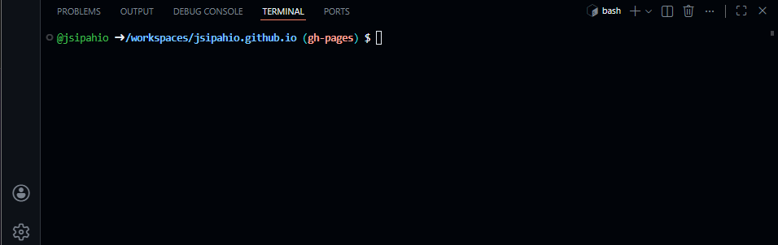
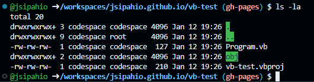
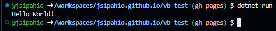
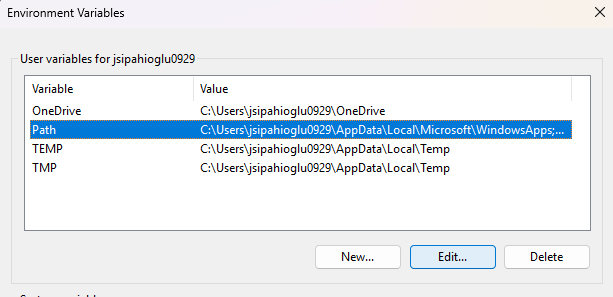

Setup Help
This guide aims to help students who cannot, or wish not to, use Visual Studio for CSE122, programming logic and problem solving. This guide is applicable to all operating systems, with some minor variations. As an alternative to Visual Studio, you may use Visual Studio Code (commonly referred to as VS Code, or just Code) and manually install the .NET SDK (Software Development). You will have to learn to operate a terminal a bit to use this method, but I think this is a good skill to have.
Step 1: Install VS Code
If you go to this link (https://code.visualstudio.com/), the website should (as long as you don't have a browser/settings that hide it) detect your operating system and processor. There will be a Download button at the top of page, with the name of your OS. If the OS is wrong, or if you don't see the Download button, go here (https://code.visualstudio.com/Download) and select the Download that matches your OS and CPU.
It will likely take a minute or two to download. Once it finishes, run the installer. The default settings for the install will be fine. Once finished, verify that you can open VS Code. Once you've checked it, go ahead and close it while we install the .NET SDK.
Step 2: Install the .NET SDK
The .NET SDK installs the dotnet command line tool, along with the compilers and project templates for .NET languages (C#, F#, and Visual Basic). This link (https://dotnet.microsoft.com/en-us/download) should automatically detect your OS/CPU architecture and provide the correct installer download. If it does not, go here (https://dotnet.microsoft.com/en-us/download/dotnet/10.0) and find the version that matches your OS. Windows users with Intel or AMD processors should choose Windows x64. Windows users with a Snapdragon processor should choose Windows Arm64. Mac users should choose Mac x64 if they have an Intel CPU, or Arm64 if they have an Apple Silicon (M1/2/3/4).
Once you've downloaded the installer (again, it may take a couple minutes), run it and click through until you get the option to install.
Step 3: Verify Installation
Open VS Code. You can open an integrated terminal session within VS Code by holding the CTRL key and pressing "~" (the key to the left of "1"). You should get a terminal at the bottom of your screen, similar to what is shown below:

In it, type the following command:
dotnet --list-sdks
You should get output similar to the following:
![dotnet install verified - expected text similar to: "10.0.100 [/usr/share/dotnet/sdk]"](../image-1.png)
Let's create a new directory to create a test project in. In your terminal, type:
mkdir vb-test
This creates a directory (aka folder) called "vb-test". Now, let's enter that directory, using the cd command. cd is short for change directory.
cd vb-test
Now, we will create a new Visual Basic console application in this directory using the command below:
dotnet new console --language vb
This will automatically generate the files required to create and run a Visual Basic Console application. Running ls -la in the terminal will display the files. You want to see something similar to the output below:

The single period represents the current directory, and the .. is for the parent directory. We don't really care about those. What are important are the Program.vb, obj and vb-test.vbproj. The Program.vb file contains the source code for your program. The obj directory contains some generated files required by .NET. The vb-test.vbproj files are instructions for the .NET compiler. If these files are all present, you can try building and running you project with the following command. This should print "Hello World!" to the terminal:
dotnet run
Expected output:

If you've gotten to this point, congratulations! Your installation of VS Code and .NET have been successful.
Step 4: Setting Up for the Rest of the Semester
Now that you have your installation verified, I'd recommend getting a folder set up for the rest of the semester. Either using the terminal, or your file explorer GUI, create a folder for this class wherever you'd like. We have 6 Visual Basic labs in this class, in Weeks 3, 5, 8, 10, 12, and 14. These correspond to chapters 2, 3, 4, 5, 6, and 9 from the book. Make a folder for each, using either the week or chapter numbers to keep them separate.
Now, when the time comes, you can go to "File in the top right corner of VS Code, select "Open folder", and navigate to the correct lab folder for the week we are on. Then, you can open a terminal in VS Code using CTRL + ~, and running dotnet new console --language vb. You can edit your Program.vb source code file by clicking on it in the list of files on the left side of the VS Code window. To test your code, run dotnet run in the terminal.
Step 5: Check the Terminal Basics Doc
I've also included a "Terminal Basics" sheet under this class. This will provide you with some basics of using a command line interface. I've tried to do this in a way that avoids the terminal as much as possible, but there are instances where it is needed.
Troubleshooting
As the semester goes on, I'll add issues that people encounter to this troubleshooting guide, so you can check back here if you have any issues.
Issue: When running dotnet --list-sdks, I get a message to the effect of "dotnet is not a valid command".
Solution: This means that the dotnet tool is not installed, or did not get added to your system's path. Follow the instructions under "Step 2: Install the .NET SDK". If you are sure that it is installed correctly, the issue is likely that the dotnet command line tool did not get added to your system's path.
Windows
- In the search box in the task bar, search "environment variables". If you are on a computer only you use, you can edit the System or "Your Account" variables. If it is a shared computer, edit the variables for your account.
- In the top of the box, click Path to highlight it, and click the "Edit..." button.

- A new box should pop up. Click the "New" button. This will allow you to type into the next unused row.
- The default path for dotnet is "C:\Program Files\dotnet". Enter that into the box

Mac
- The only way this would happen is if you installed .NET to a non-standard location. I'd recommend running the installer again, uninstalling, and installing it again. If you still have issues, contact me.
All
- After following the steps for your OS, attempt to perform step 3 again to verify the installation.
Issue: When I try running dotnet run, I get this message: "Couldn't find a project to run. Ensure a project exists in /workspaces/jsipahio.github.io, or pass the path to the project using --project."
Solution: This indicates that your terminal is not in the same directory as your project. If you are not comfortable using a terminal to navigate your file system, navigate to your project folder using your file explorer application. Make sure you are in the folder, you should see your Program.vb and .vbproj files. Copy the path by right-clicking the path in the top bar. Select "Copy as text" if you are on Windows. Mac users should hold the Option key while right-clicking, and select "Copy name_of_folder As Pathname". Go back to the terminal, type cd, add a space, then paste in the path you just copied. Hit enter. This should change your terminal's directory into the correct one. Try running dotnet run again.